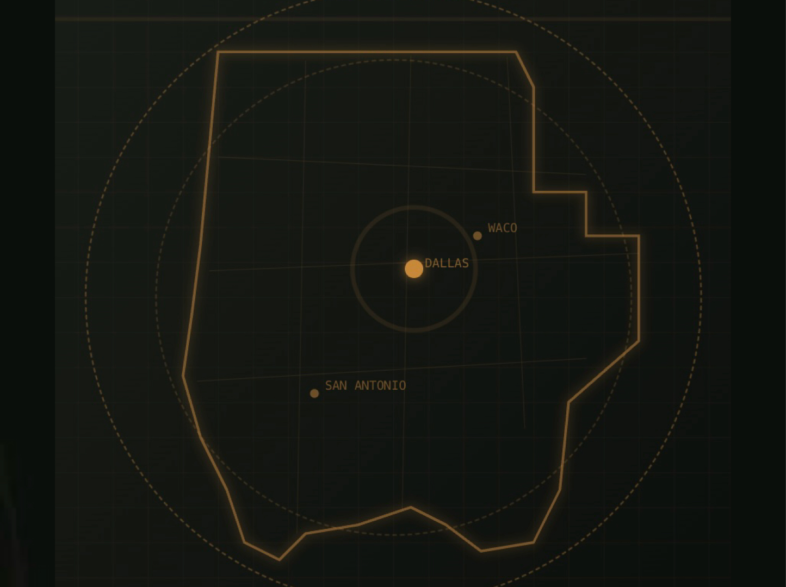

GIS Services · Texas
Precision mapping for the communities you serve.
Enterprise-grade GIS solutions tailored to the operational, regulatory, and infrastructure needs of Texas municipalities, counties, and special districts.

Counties Served
254
Texas local government GIS